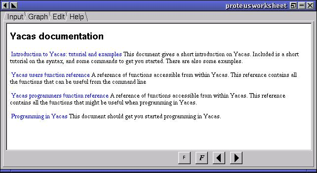
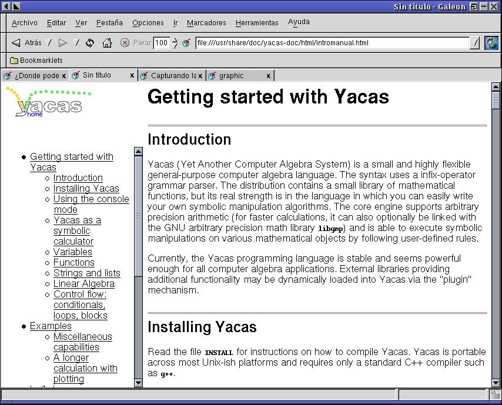

| Herramientas en GNU/Linux para estudiantes universitarios: La herramienta de cálculo científico YACAS | ||
|---|---|---|
| Anterior | Capítulo 1. Introducción a YACAS | Siguiente |
Podemos encontrar ayuda sobre YACAS en http://www.xs4all.nl/~apinkus/yacas.html. En esta dirección se encuentra el manual de YACAS, en Inglés. Lamentablemente todavía no hay versión en Español.
Si estamos utilizando GNU/Linux y tenemos instalada la interface gráfica de YACAS, yacas-proteus, podemos recurrir a la ayuda on-line que trae:

Si tenemos instalada la ayuda de YACAS en el sistema o nos la hemos bajado de la URL anterior la podemos consultar utilizando un navegador web:

También existe una lista de correo electrónico a la que nos podemos suscribir, para suscribirnos no tenemos más que mandar un correo a: <yacas-subscribe@yahoogroups.com> y a partir de ese momento podremos participar en la lista preguntando y respondiendo, en Inglés :-(.
YACAS posee un mecanismo para suministrarnos ayuda sobre su funcionamiento, pare ello ver Sección 2.5.